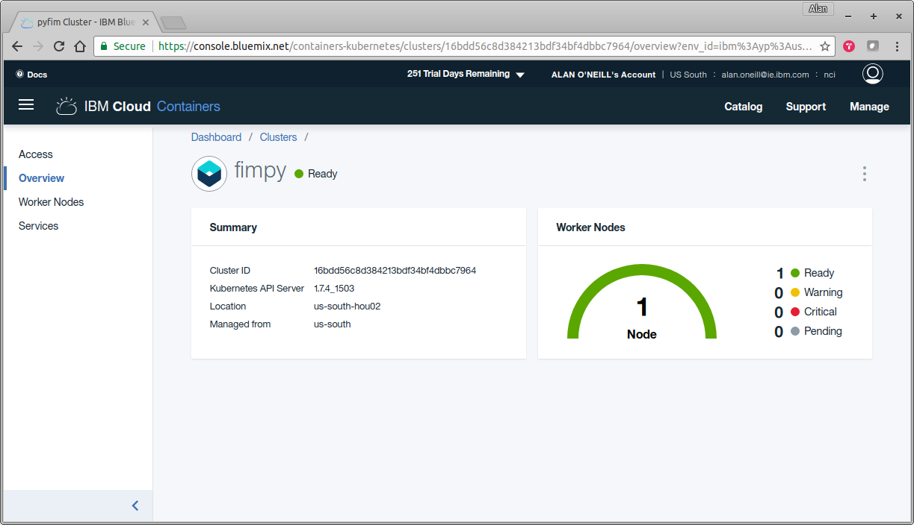
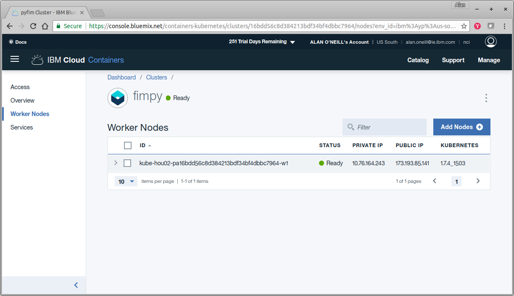

Kubernetes Reference


Create Service
~/dev/project/FIMpy(master*) » kubectl create -f kube-service.yaml
service "fimpy-service" created
Create Deployment
~/dev/project/FIMpy(master*) » kubectl create -f kube-deployment.yaml
deployment "fimpy-app" created
Get Service
~/dev/project/FIMpy(master*) » kubectl get service -o wide oneillal@xubuntu
NAME TYPE CLUSTER-IP EXTERNAL-IP PORT(S) AGE SELECTOR
fimpy-service NodePort 172.21.13.63 <none> 5000:31342/TCP 2m app=fimpy-app
kubernetes ClusterIP 172.21.0.1 <none> 443/TCP 10d <none>
Get Pod
~/dev/project/FIMpy(master*) » kubectl get pods -o wide
NAME READY STATUS RESTARTS AGE IP NODE
fimpy-app-3774997280-glctd 1/1 Running 0 2m 172.30.91.215 10.76.164.243
Logs
~/dev/project/FIMpy(master*) » kubectl logs -f fimpy-app-3774997280-glctd
Found local VCAP_SERVICES
fimpy-app-3774997280-glctd
* Running on https://0.0.0.0:5000/ (Press CTRL+C to quit)
* Restarting with stat
* Debugger is active!
* Debugger PIN: 184-335-951
Deployment Shell Access
~/dev/project/FIMpy(master*) » kubectl exec -i -t fimpy-app-3774997280-glctd bash
root@fimpy-app-3774997280-glctd:/app# ps -ef
UID PID PPID C STIME TTY TIME CMD
root 1 0 0 18:36 ? 00:00:00 /pause
root 5 0 0 18:36 ? 00:00:00 python -u main.py
root 15 5 1 18:36 ? 00:00:15 /usr/bin/python main.py
root 23 0 0 19:00 pts/0 00:00:00 bash
root 32 23 0 19:00 pts/0 00:00:00 ps -ef